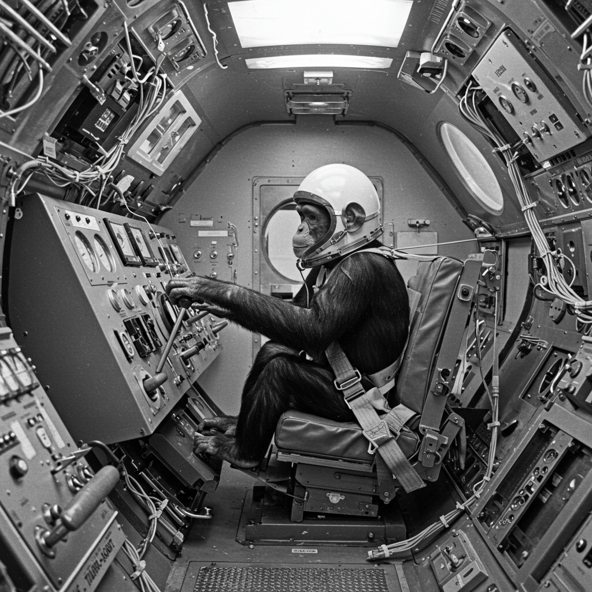

❤️ Frecuencia cardíaca: 210 BPM
🩸 Presión arterial: 160/95 mmHg
🧠 Estado mental: Alerta, buena respuesta motora
🤕 Lesiones: Contusiones leves
Sujeto Alfa: HAM

Ficha Técnica – HAM
- Nombre clave: HAM
- Especie: Pan troglodytes
- Fecha de nacimiento: circa 1957
- Origen: Camerún
- Misión: Mercury MR-2 – Vuelo suborbital
- Fecha: 31 de enero de 1961
- Duración: 16 minutos y 39 segundos
- Altitud máxima: 253 km
- Velocidad: 9,426 km/h
- Recuperación: USS Donner – Océano Atlántico
Misión y Legado
HAM fue el primer chimpancé entrenado para operar controles dentro de una cápsula espacial. Su misión demostró que los humanos podrían mantener funciones cognitivas en el espacio. Tras un vuelo exitoso, aunque con desviaciones, HAM regresó con vida y se convirtió en el precursor directo del vuelo tripulado de Alan Shepard.
❤️ Frecuencia cardíaca: 190 BPM
🩸 Presión arterial: 155/92 mmHg
🧠 Estado mental: Concentrado y activo
🩹 Lesiones: Ninguna significativa
Sujeto Beta: ENOS

Ficha Técnica – ENOS
- Nombre clave: ENOS
- Especie: Pan troglodytes
- Fecha de nacimiento: circa 1959
- Origen: Camerún
- Misión: Mercury-Atlas 5 – Vuelo orbital
- Fecha: 29 de noviembre de 1961
- Órbitas completadas: 2
- Duración: 3 horas y 20 minutos
- Recuperación: USS Stormes – Océano Atlántico
Misión y Relevancia
ENOS fue el primer chimpancé en completar una órbita terrestre. Durante su vuelo enfrentó fallas técnicas reales, lo que le obligó a ejecutar comandos manuales bajo presión. A pesar de los riesgos, se comportó de forma ejemplar, confirmando que un ser humano podría sobrevivir y operar eficientemente en una misión orbital.
⬅ Regresar al Archivo X